Префектура Окинава · Наха и Итоман · сладости
Сладости Окинавы: чёрный сахар, тоган-дзукэ, ледяная дзэндзай и сата-андаги
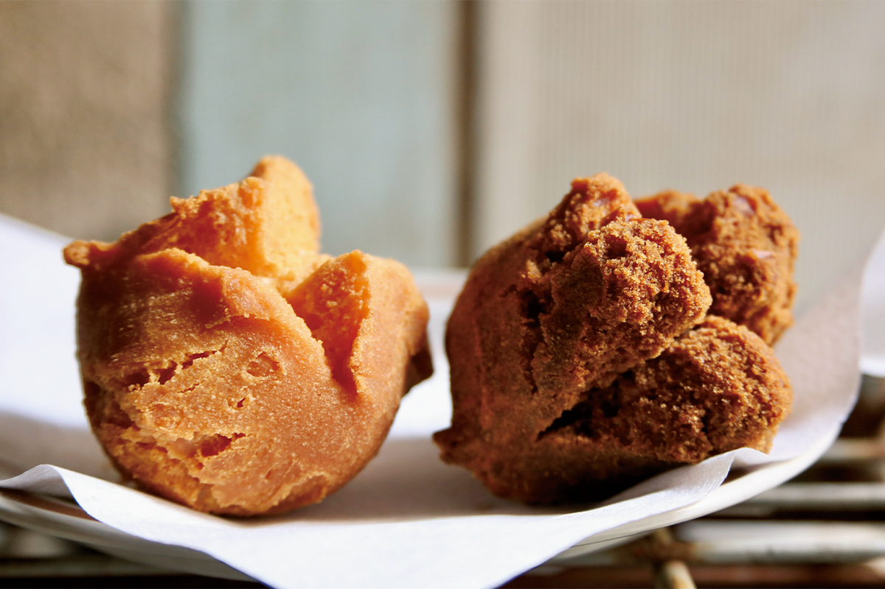
Фотограф, который снимает Окинаву с 1973 года и живёт здесь больше тридцати лет, объездил острова вдоль и поперёк и везде находил сладости. Четыре адреса из его списка: от фермы, где варят чёрный сахар на дровах, до рыночной лавки с пончиками.
Чёрный сахар
«Носуйэн Нидзи»: сахар, который считают лекарством
На Окинаве есть слово «нутигусуй», «лекарство для жизни». Так называют еду, которая настолько питательна, что лечит, и всё вкусное, от чего становится хорошо телу и душе. Чёрный сахар «Санго кокуто», «коралловый чёрный сахар» с фермы «Носуйэн Нидзи», именно такой.
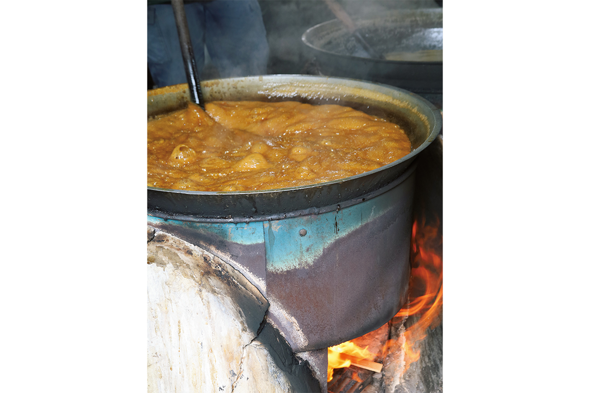
Этот способ варить сахар пришёл на Окинаву около 400 лет назад из китайской провинции Фуцзянь, а распространил его, как считается, Синдзё Гима (1557–1644). Его почитают на острове как одного из самых полезных людей в истории королевства Рюкю.
Хозяин фермы всерьёз взялся за сахар около десяти лет назад, после встречи с врачом, у которого была клиника на Окинаве. Врач лечил пациентов диетой и прописывал им чёрный чай с чёрным сахаром и имбирём, но однажды пожаловался, что хорошего сахара больше не найти.
«К тому времени я занимался землёй уже лет тридцать. Вот я и решился сказать: доверьте это мне»
хозяин фермы
Ферма стоит в городе Итоман на юге острова Окинава, там, где хозяин вырос. Когда-то здесь было много сахарных хозяйств: тростник давили на деревянных прессах, которые тянули быки.
«В детстве у каждого поля был свой вкус тростника. Лучшие поля называли „исигуси-тибару“: под землёй у них лежит слой рюкюского известняка, каменная мука. Я взял это знание и стал добавлять в почву коралловую крошку. В кораллах много минералов, и говорят, они очищают от дурного. Отсюда и название сахара»
хозяин фермы
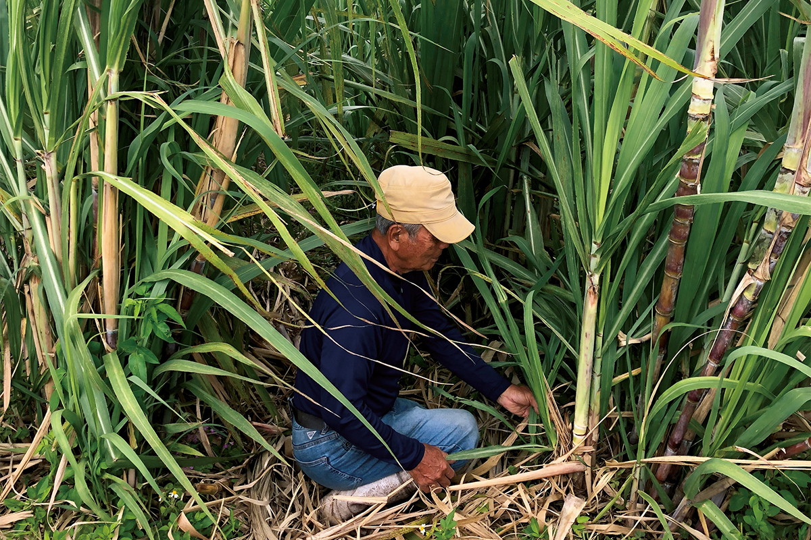
Врач объяснил ему, что лекарством сахар становится, только если весь путь до человека пройден без лишнего и с любовью. Поэтому на поле нет ни пестицидов, ни химических удобрений. Тростник срезают вручную, стебель за стеблем, а сок около пяти часов выпаривают в трёх котлах на дровах, как делали больше 400 лет назад. Всё это время его без остановки мешают и следят за огнём, чтобы не убежал и не пригорел. Патоку для вкуса и твёрдости не добавляют: в составе только тростник.
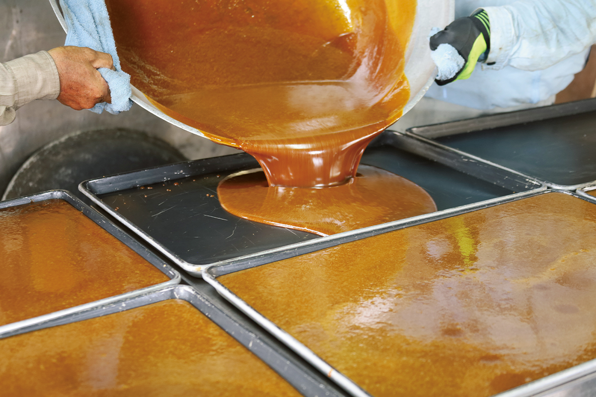
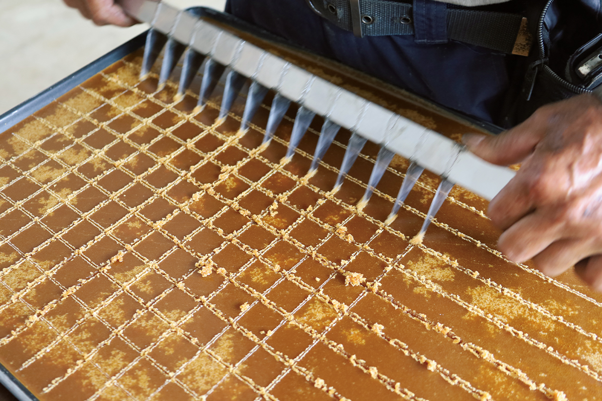
Фотограф признаётся, что объехал сахарные заводы на восьми островах Окинавы, и закончил поиски здесь.
«Когда я впервые попробовал этот сахар, мне будто объяснили: вот каким должен быть чёрный сахар. Восторг дошёл от языка до головы, и с тех пор я у него в плену»
фотограф
Кусочек сначала хрустит, а потом медленно тает на языке. Сладость у него глубокая, с богатым вкусом.
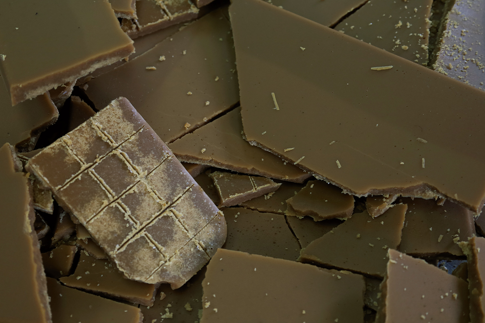
Кроме тростника на ферме растят овощи и фрукты и держат кур на свободном выгуле. Жмых тростника бродит на поле и идёт курам в корм, а помёт удобряет тростник. Сюда может приехать любой: ферма устраивает дни работы в поле и мастер-классы по варке сахара. Хозяин называет её «фермой опыта, где учатся жить своим трудом».
«На природе становишься честнее с самим собой. Весело, радостно, вкусно, и это чувствуешь не умом, а сердцем. Для этого лучше всего поле. Я и сам, когда захожу на поле, успокаиваюсь и снова становлюсь собой»
хозяин фермы
Сейчас он учит других делать такой сахар. «Способ простой, у любого получится. А вот вкус покажет, какое у человека сердце. Главное удобрение, наверное, любовь».
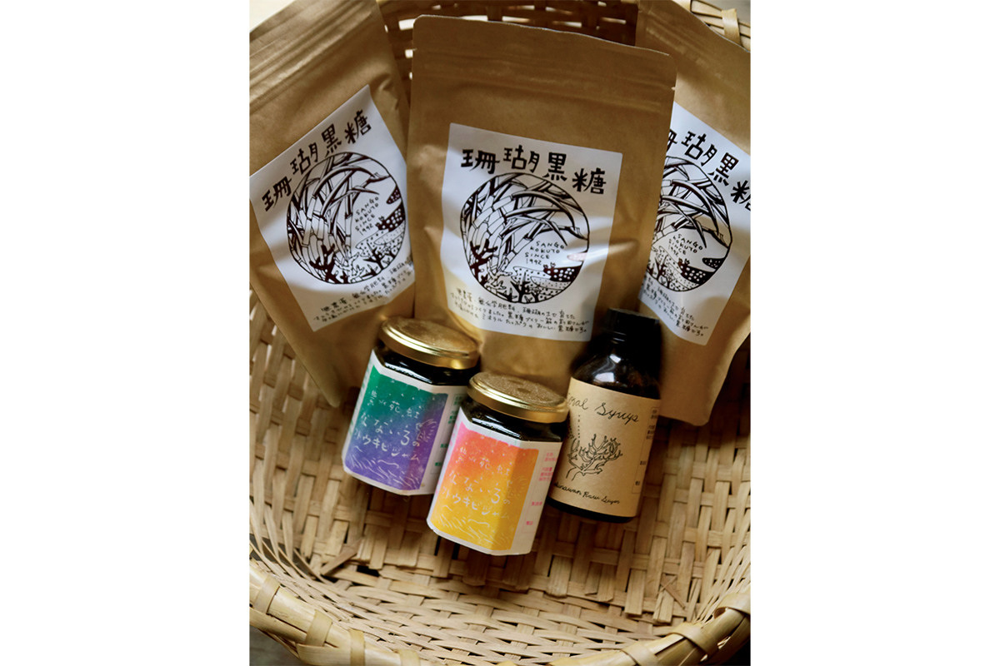
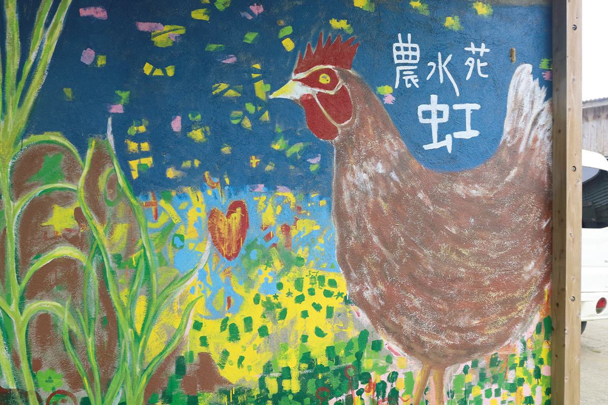
«Носуйэн Нидзи»
- Адрес
- префектура Окинава, Итоман, Арагаки, 527
- Телефон
- +81 80-6490-1858
- Часы работы
- 10:00–16:00
- Выходные
- нерегулярные
Тоган-дзукэ
«Дзяхана киппан»: сладость королевского двора
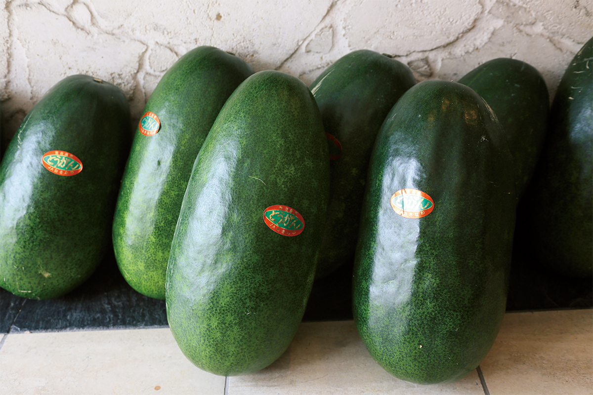
Больше 300 лет назад из китайского Фучжоу на Рюкю пришли две сладости: «киппан» и «тоган-дзукэ». При дворе королевства их подавали на пирах «укансин-рёри» в честь китайских послов сакухоси, и пробовать их могли только знатные люди. Простым жителям они стали доступны лишь в эпоху Мэйдзи, примерно тогда, когда открылась лавка «Дзяхана киппан». Ей больше 130 лет.
При бабушке нынешней хозяйки, в четвёртом поколении, лавка называлась «Гакия сётэн» и стояла в квартале Кумэ в Нахе. На нынешнее место она переехала позже, а нынешнее имя получила около 50 лет назад. Киппан и тоган-дзукэ требуют столько труда, что сегодня их делают только здесь. Хозяйка в шестом поколении не хотела, чтобы эти сладости исчезли, и в 2011 году вместе с семьёй вернулась на Окинаву из Лондона, где жила после замужества, и приняла дело у отца.
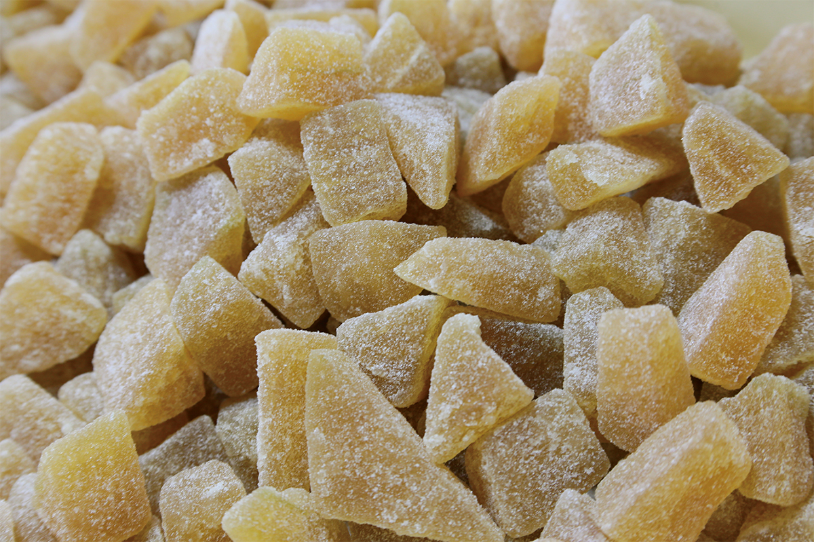
Фотограф поддерживает её решение и советует именно тоган-дзукэ: когда-то он ел её как закуску к авамори. Тоган на Окинаве называют «сибуи», и его часто тушат с мисо. Для сладости тыкву целый день чистят от кожуры и мякоти с семенами и вымачивают, на следующий день уваривают в сахаре и тыквенном сиропе, а под конец обсыпают сахаром. Сироп похож на карамель: его годами доливают к старому, и от этого он становится янтарным. Глядя на блестящий срез, хозяйка говорит: «Правда, как драгоценный камень?»
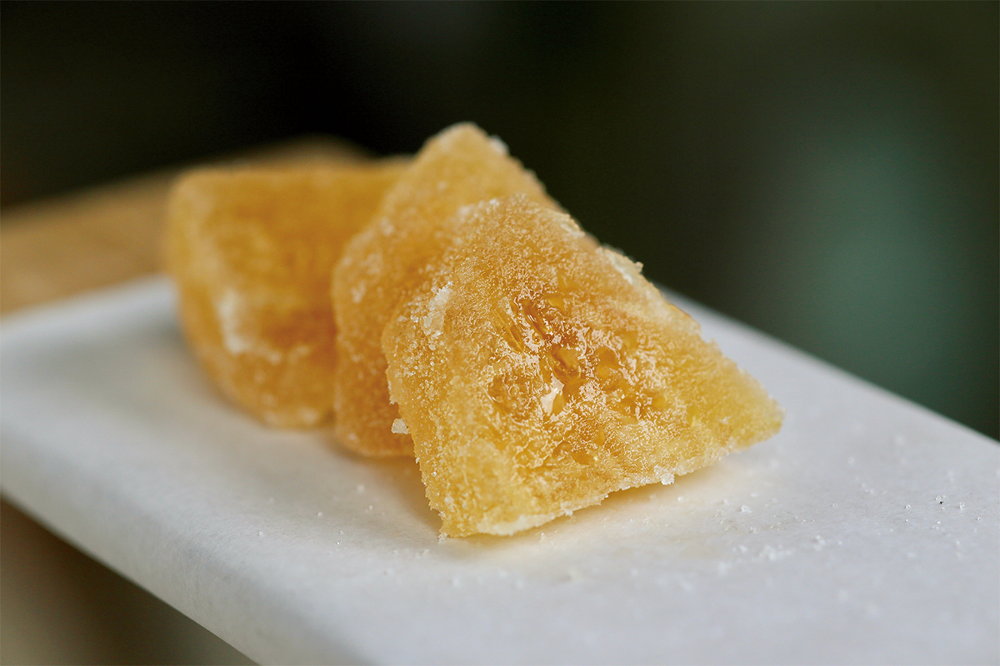
Сначала хрустит сахар, потом рот наполняется сочной, почти как фруктовой мякотью. Со временем появились и новые вкусы: тоган-дзукэ, пропитанная соком сикуваса или ромом с острова Иэ.
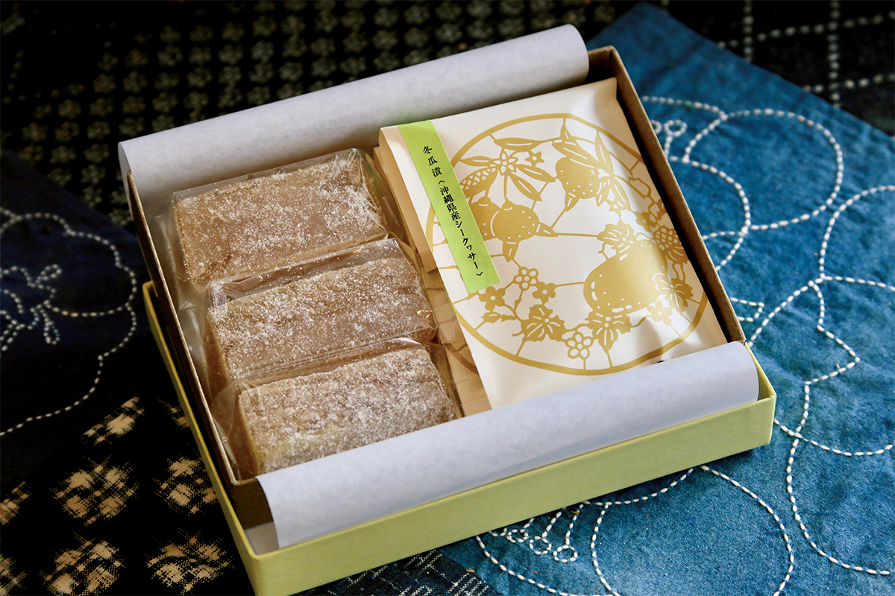
«Попробуйте тоган-дзукэ с кусочком голубого сыра, это очень хорошо! Даже тем, кто не любит сладкое»
фотограф
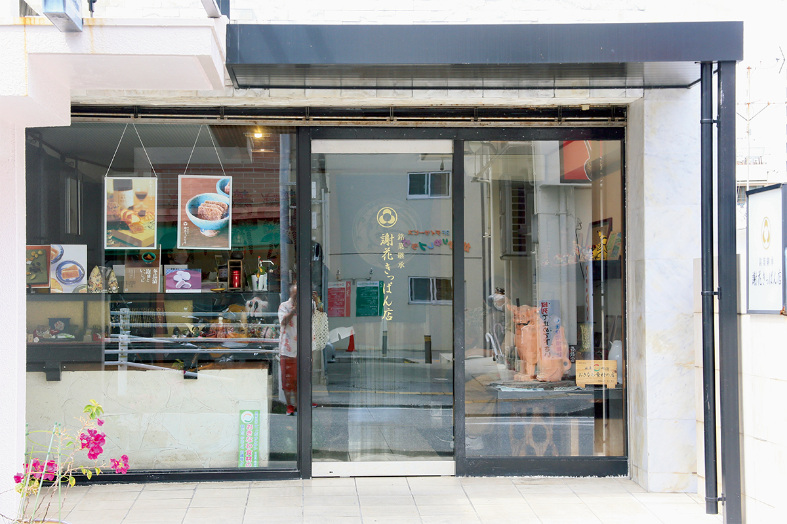
«Дзяхана киппан»
- Адрес
- префектура Окинава, Наха, Мацуо, 1-5-14
- Телефон
- +81 98-867-3687
- Часы работы
- 10:00–17:00
- Выходные
- воскресенье
Дзэндзай
«Сэннити»: лёд и фасоль с 1950-х годов
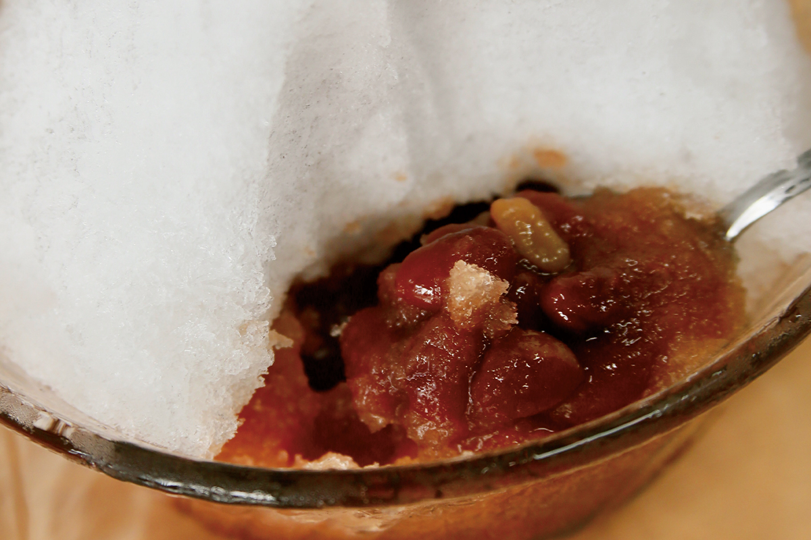
В остальной Японии дзэндзай это горячий суп из фасоли адзуки. На Окинаве так называют сладкую фасоль кинтоки под горкой колотого льда. Кинтоки появилась здесь после войны: её в избытке завозили американские военные, и её было легко достать. В жарком климате лучше способа охладиться и передохнуть не придумаешь. Когда точно родилась окинавская дзэндзай, неизвестно, но на фотографии из «Сэннити» 1960-х годов в меню уже видна «охлаждённая дзэндзай».
Всё началось в 1952 году, когда родители нынешнего хозяина открыли «Яфунэ сёкудо», столовую с домашней едой и колотым льдом из ручной американской машины. Потом семья держала фабрику мороженого «Сэннити рэйка», а в 1962 году «Сэннити» переехал на нынешнее место.
«Мама была очень открытым человеком, многие приходили ради неё. А отец был педантом и много работал над вкусом, он подробно записывал рецепты. Благодаря этому мы до сих пор готовим так же, как он»
сестра хозяина, которая ведёт кафе вместе с ним
Лёд насыпают высоким конусом, и он получается воздушным благодаря очень твёрдому льду и хорошо заточенному ножу. Мелкие льдинки сразу тают на языке. Под ними фасоль, которую варят больше шести часов и потом сутки выдерживают, чтобы вкус устоялся. Она мягкая, пухлая и нежно сладкая. Кафе держится на всей семье: хозяин с женой, его сестра с мужем и сыном, жена старшего сына.
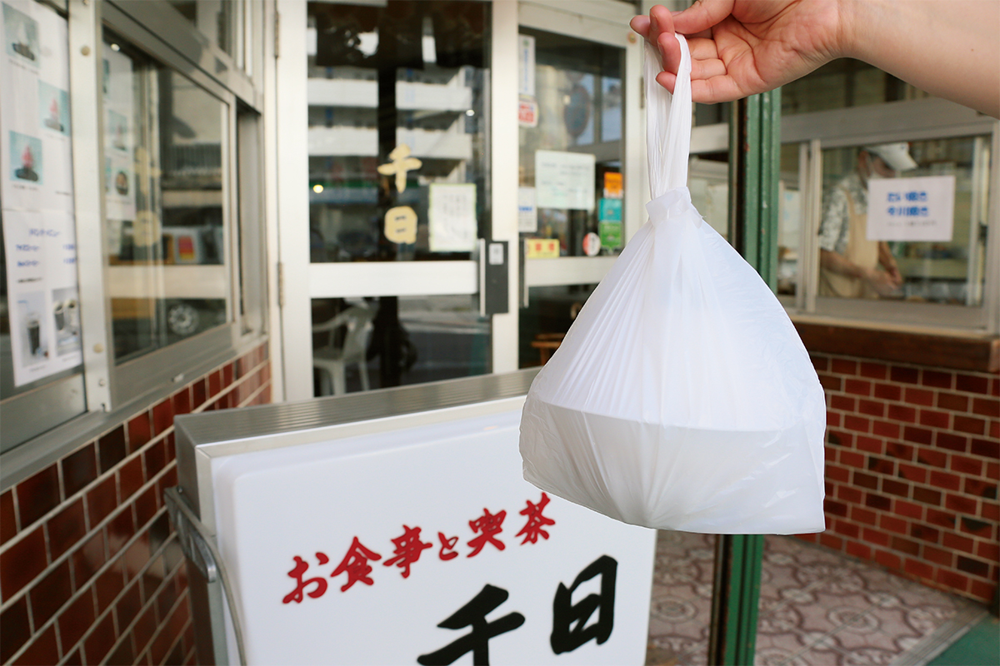
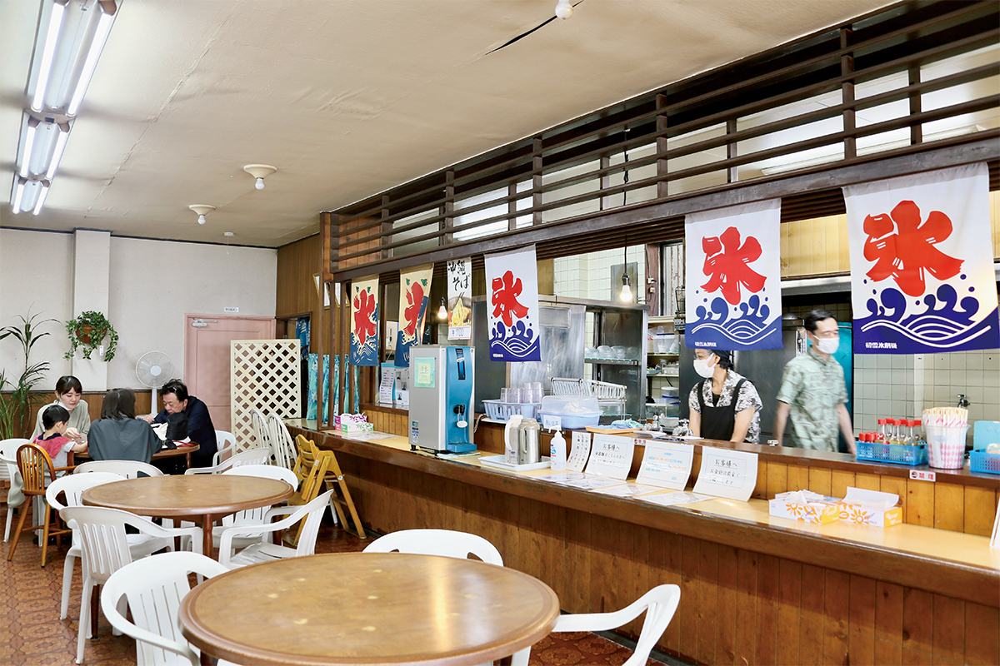
«Я впервые приехал сюда снимать около 1980 года и очень удивился, что колотый лёд берут навынос! Пухлая фасоль с мелким льдом получается в меру сладкой, я эту дзэндзай очень люблю»
фотограф
«Сэннити»
- Адрес
- префектура Окинава, Наха, Кумэ, 1-7-14
- Телефон
- +81 98-868-5387
- Часы работы
- 11:30–19:00 (летом до 20:00)
- Выходные
- понедельник
Сата-андаги
«Гоя тэмпура»: пончики с рынка
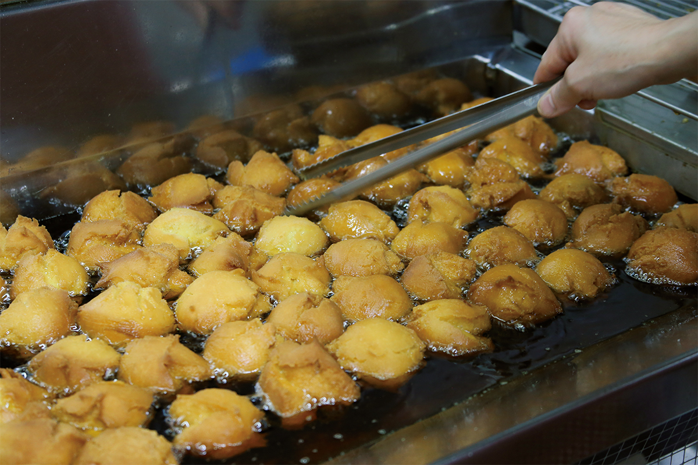
Сата-андаги одна из самых известных сладостей Окинавы. «Сата» значит сахар, «анда» масло, «аги» жареное, поэтому её ещё называют «сахарной тэмпурой». Считается, что её придумали при дворе королевства Рюкю по образцу китайской жареной сладости «кайкосё». Пока сахар был дорогим, простым людям она была не по карману.
«Гоя тэмпура» жарит сата-андаги с открытия в 1970 году и стала лицом матигва. Так на Окинаве ласково называют рынки, на которых держится повседневная жизнь. Лавка стоит рядом с Первым общественным рынком Макиси в Нахе.
«Матигва я впервые снимал в 1973 году, а около 1980 года вернулся и снял „Гоя тэмпура“. Тогда лавка была в узком переулке, в самом незаметном углу рынка, но народу было полно. И все продавщицы ходили в одинаковых розовых фартуках, это я запомнил»
фотограф
С тех пор и после переезда на нынешний адрес в 2012 году он всем советует покупать сата-андаги именно здесь. Отчасти чтобы поддержать рынок, отчасти потому что здесь можно съесть их «атикоко», с пылу с жару. Жарить начинают около восьми утра. В кипящем масле круглые шарики всплывают и покачиваются, будто танцуют.
«Когда открывались, яйца были дорогие, много класть не могли. Сейчас должно быть вкуснее»
основательница лавки
Основательница открыла лавку вдвоём с родственницей мужа и уже 50 лет стоит у плиты. Её компаньонка умерла около 2019 года, и теперь в лавке работают трое, вместе с её невесткой.
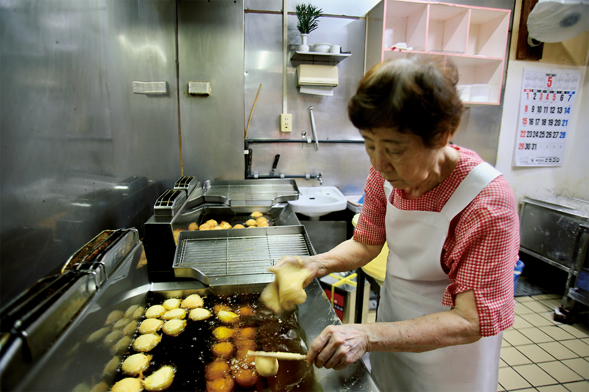
Тесто здесь замешивают из муки, яиц, сахарного песка и разрыхлителя, а для вкуса добавляют немного арахисового масла. Такие пончики называют «белыми», а с чёрным сахаром вместо песка «чёрными». Основательница берёт тесто в правую ладонь и выдавливает шарик между большим и указательным пальцами, а палочками в левой руке отрезает его и опускает в масло. «У меня так пока не получается», тихо говорит невестка.
Два обжаривания в разном масле занимают около 40 минут. «Готово! Ешьте, пока горячие». Снаружи хрустящая корочка, внутри влажная мякоть, послевкусие лёгкое, совсем не жирное, сладость едва заметная. На Окинаве еду, в которую вложено столько заботы, что в неё впитался жир рук, называют «ти-анда». Эти сата-андаги именно такие.
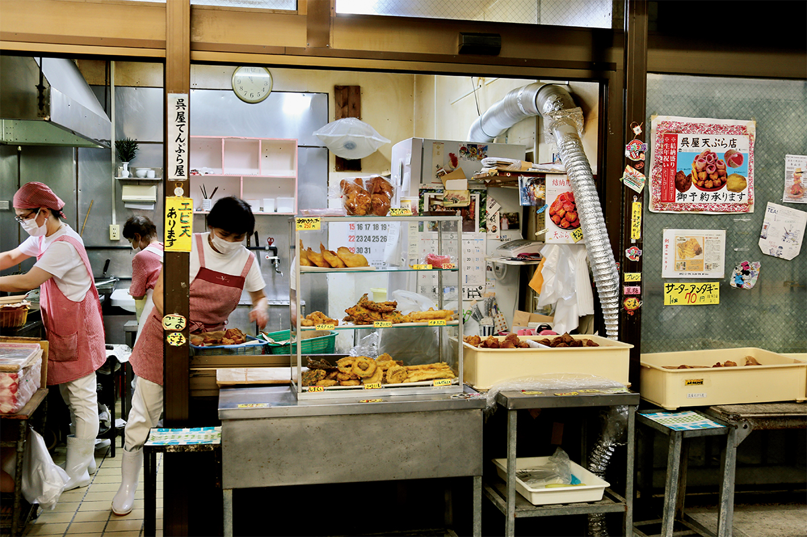
«Когда ко мне приезжают друзья с материка за вкусными сувенирами, я первым делом веду их на рынок и сюда обязательно. Я люблю чёрный сахар, поэтому всегда беру чёрные. Очень вкусно!»
фотограф
«Гоя тэмпура»
- Адрес
- префектура Окинава, Наха, Мацуо, 2-11-1
- Телефон
- +81 98-868-8782
- Часы работы
- 8:30–18:00
- Выходные
- нерегулярные
Фото: Кэнго Таруми.